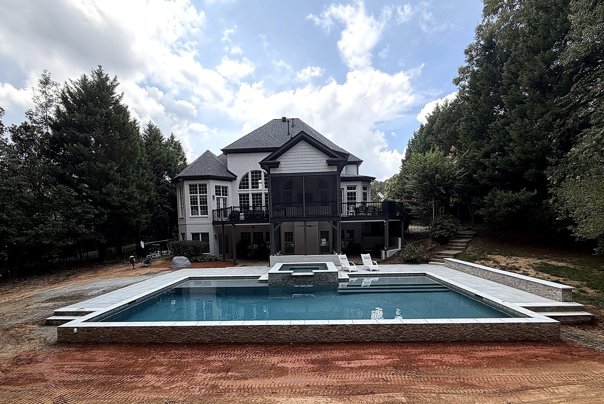

Custom pool design
Geometric or freeform, every layout is shaped around your property, lifestyle, and vision.
Custom pool design & construction
Every backyard is different. Every pool should be too. EMV creates custom pools that feel like they have always belonged to your home.
Start designing your pool →From vision to water
We combine thoughtful design, quality materials, and expert construction to create a space made for everyday enjoyment—from quiet mornings to full backyard gatherings.
Geometric or freeform, every layout is shaped around your property, lifestyle, and vision.

Integrated spas, tanning ledges, sun shelves, benches, steps, lighting, and water features bring the design to life.

Tile, coping, decking, automation, and equipment are selected to complete the whole outdoor experience.
Our process
We listen to your goals, property, and priorities.
We shape a plan that fits your home and lifestyle.
Choose finishes and features with confidence.
Our team builds with care and precision.
Every edge, surface, and feature is completed.
We make sure everything is ready to enjoy.
Your backyard starts here
Tell us what you are imagining and we will help you take the next step.